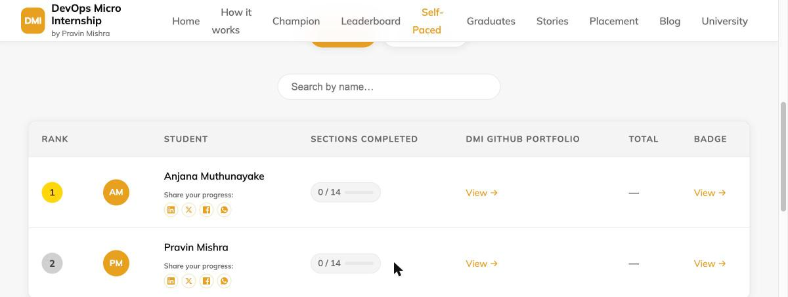

How the Self-Paced Leaderboard Actually Works
Open the Self-Paced leaderboard and you'll see a rank, a name, a "Sections Completed" count, and a "Total." What you won't see — unlike the Cohort leaderboard, which shows a row of point cards right at the top — is any explanation of what those numbers actually mean or how they're calculated. This post is that explanation, taken directly from the grading code that runs it, not a guess.
No cohort, no groups, no fixed start date
The Cohort leaderboard tracks one group moving through 14 weeks together, with group numbers and a shared calendar. Self-Paced has none of that. You enroll whenever you want, work through the same 14 sections (Essentials through Kubernetes) at your own pace, and the leaderboard just reflects where you actually are — there's no "week 6 of the cohort" to be behind or ahead of, only your own sections completed.
How the ranking actually sorts you
Two numbers, in a strict order: Sections Completed first, Total points as the tiebreaker. Someone with 5 sections fully completed will always outrank someone with 4 sections completed, no matter how many bonus points the second person has racked up from LinkedIn or blog posts along the way. Total only decides ties between people on the same section count. The reasoning, straight from the scoring code's own comment: pacing matters more than raw points — this is a program about consistently finishing real work, not about maximizing a score.
What actually earns points
Every section is scored the same three ways, and the actual point values are fixed in the grading system:
- 20 points per assignment file that passes. A section with one assignment (like Section 01, Internet & Networking) is worth 20 points from assignments; a section with six assignments (like Section 07, AWS Cloud) is worth up to 120.
- 10 points for a verified LinkedIn post about that week's work — checked automatically, not self-reported.
- 30 points for a verified blog post that actually links back to dmi.pravinmishra.com — a text mention of "DMI" alone doesn't count, the review agent checks for a real link.
There's no Attendance category on Self-Paced — that's a Cohort-only points source, tied to live Saturday sessions that Self-Paced doesn't have. So a fully-scored Self-Paced section caps at (assignments × 20) + 10 + 30. Section 01 tops out at 60. Section 07, with six assignments, tops out at 160.

What actually counts as a "completed" section
This is the part most people get wrong: a section counts toward "Sections Completed" the moment all of that section's assignment files pass — full stop. LinkedIn and blog posts add real points to your Total, and they're worth doing for the visibility, but they are not required for a section to count as done. You can have a 100%-complete section with 0 bonus points, or a section with LinkedIn and blog credit but assignments still failing — and the second one does not count as completed, regardless of how many bonus points it earned. Sections Completed only ever moves forward on real, passing work.
Active vs. Graduates, and the 14/14 line
The leaderboard has two tabs. Active is everyone still working through the 14 sections, sorted by the rule above. Graduates is everyone who's reached all 14 — at that point you move out of the ranked table entirely and into the graduate roster, alongside your role, country, and a link to your badge page. There's no separate "pass" threshold to negotiate — 14 real, fully-passing sections is the whole bar.
Where to see your own breakdown
The leaderboard only shows the summary numbers. Your own badge page (linked from the "Badge" column on your row) shows the full per-section detail — every check, pass or fail, with the exact points earned for that check, updated after every automated review run. If a section shows fewer points than its maximum, the badge page tells you exactly which check is still open and what to do about it.
Want to see where you'd actually land? Start the Self-Paced track → Or read what a DevOps Micro Internship actually is if you're still deciding.